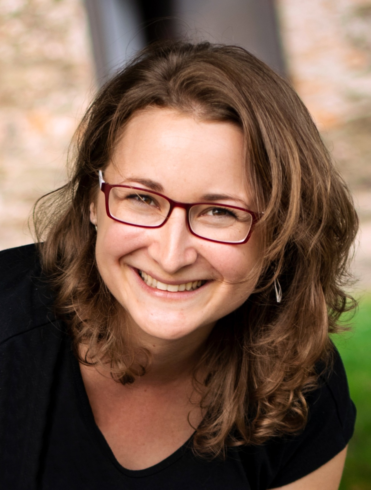
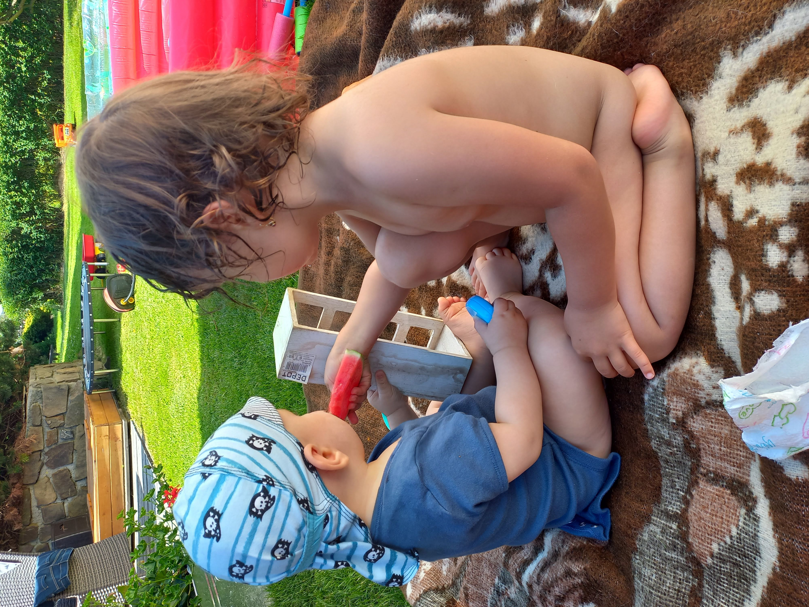

Moje aktuální koníčky jsou děti a kváskování...
... a samozřejmě mě velmi chytla tvorba webu. Jsem nadšený samouk, ale bohužel s dětmi není tolik času a tak jsem velmi
vděčná za kurz HTML a CSS 1 s Michalem, který mi svým online konceptem velmi vyhovuje.

Děti... moje zatím největší životní výzva.
Asi mě nikdo nemohl připravit na mateřství. Je to podle mě skvělý seberozvojový kurz, který je v podstatě zadarmo a ještě vám platí stát. Člověk se naučí určovat priority a taky to, jak zvládat stresové situace. Člověk si také začne vážit maličkostí a svůj volný čas dokáže využít na maximum. Každý den lze trénovat trpělivost. Ale nevyměnila bych je za nic na světě. ♥
Moje vášeň a taky relax...
Pečení máme v rodině a v krvi. Peču s minimem použití cukru, většinou z bezlepkových muk a využívám spíš rostlinná mléka. A vajíčka používám pouze ty od šťastných slepiček. Baví mě celý proces pečení od výběru surovin, přes přípravu nástrojů, vytváření těsta a těšení na samotný výsledek. Možná poslední fáze, uklízení, není moje nejoblíbenější, ale naštěstí máme myčku. A když rodině chutná, je to radost.